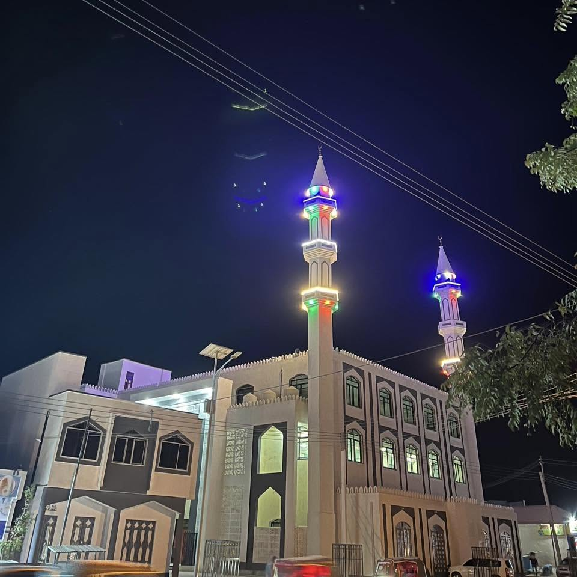

August 14, 2026
What One Building Can Carry

There's a mosque in the heart of Laascaanood, Cali Barre, that stands taller than most buildings around it. I keep coming back to this photo of it at night, its twin minarets lit up in green and blue against the dark sky, standing steady over a city that has known more than its share of hardship. You don't need a caption to understand what it's saying. It's saying: we're still here, and we're still building.
A single building can carry a disproportionate amount of hope.
I've spent enough years around reconstruction and development work to know that progress is usually invisible: a training completed, a registry updated, a budget line finally approved. It rarely gives you something to point to. But every so often a structure goes up that becomes more than brick and plaster. It becomes a landmark people orient themselves by, literally and otherwise. Ask for directions in Laascaanood and sooner or later someone mentions Cali Barre. It has become a fixed point in a city that spent years without many fixed points at all.
That's what I think reconstruction actually looks like, up close. Not a single master plan executed from above, but thousands of individual acts of faith, families rebuilding a wall, a congregation finishing a mosque, a market reopening one stall at a time, that add up to something a whole region can recognize as forward motion. Laascaanood as the capital of North East State carries a heavy symbolic weight right now. Every building that goes up there is doing double duty: it shelters people, and it argues, quietly but firmly, for a future worth investing in.
I don't think you need to be religious to feel what a mosque like that means to a community that has waited a long time to build something meant to last, rather than something built to survive the next emergency. There's a difference between those two kinds of construction, and it shows in the finish work, the care put into the tiling, the fact that someone believed it was worth doing well rather than doing fast.
I hope to see more of that across Sool, Sanaag, and Cayn, across North East State as a whole, in the years ahead: not just mosques, but roads, clinics, schools, the whole unglamorous infrastructure of a functioning place. One building doesn't rebuild a region. But it can remind a region what rebuilding looks like, and remind the rest of us that it's already begun.
Laabta u Fura WB.